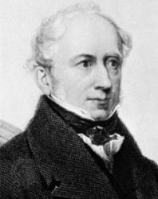
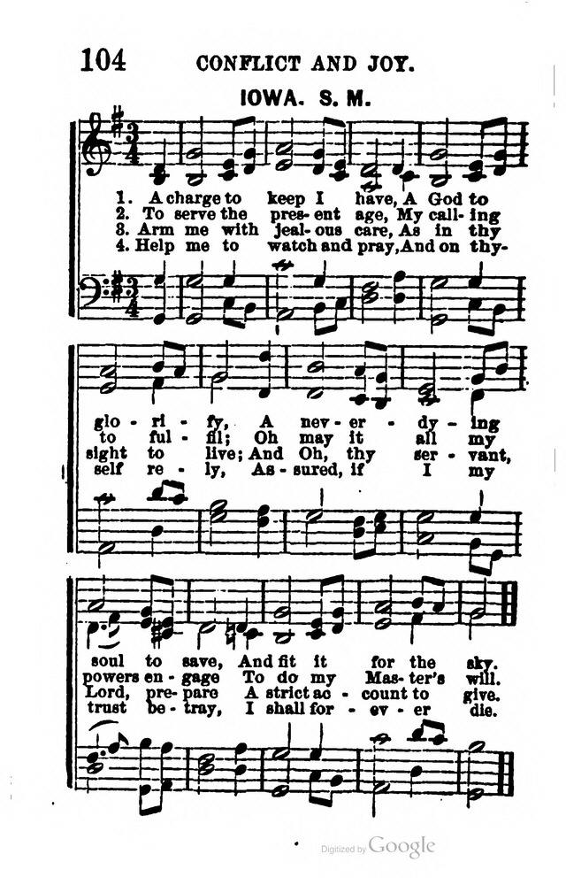
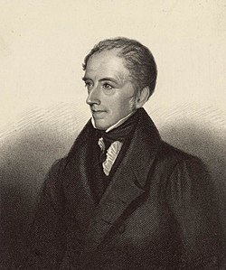

|
|
颂主新歌 |
|
1 O bless the Lord, my soul! 2 O bless the Lord, my soul! 3 He clothes us with his love; 4 Then bless his holy name, |
1.我灵，你当颂主！宣扬我主宏恩！ |
|
|
|
|
|
|


| Text: | O Bless the Lord, My Soul |
| Author: | James Montgomery, 1771-1854 |
| Short Name: | James Montgomery |
| Full Name: | Montgomery, James, 1771-1854 |
| Birth Year: | 1771 |
| Death Year: | 1854 |
James Montgomery (b. Irvine, Ayrshire, Scotland, 1771; d. Sheffield, Yorkshire, England, 1854),


the son of Moravian parents who died on a West Indies mission field while he was in boarding school, Montgomery inherited a strong religious bent, a passion for missions, and an independent mind. He was editor of the Sheffield Iris (1796-1827), a newspaper that sometimes espoused radical causes. Montgomery was imprisoned briefly when he printed a song that celebrated the fall of the Bastille and again when he described a riot in Sheffield that reflected unfavorably on a military commander. He also protested against slavery, the lot of boy chimney sweeps, and lotteries. Associated with Christians of various persuasions, Montgomery supported missions and the British Bible Society. He published eleven volumes of poetry, mainly his own, and at least four hundred hymns. Some critics judge his hymn texts to be equal in quality to those of Isaac Watts and Charles Wesley . Many were published in Thomas Cotterill's Selection of Psalms and Hymns (1819 edition) and in Montgomery's own Songs of Zion (1822), Christian Psalmist (1825), and Original Hymns (1853).
Bert Polman
Tune Information
| Title: | IOWA (51612) |
| Meter: | 6.6.8.6 |
| Incipit: | 51612 16551 12321 |
| Copyright: | Public Domain |

James Montgomery (poet) 1771 –1854
|
James Montgomery
|
|
|---|---|
|

James Montgomery, 1855
|
|
| Born |
4 November 1771 Irvine, North Ayrshire, Scotland |
| Died |
30 April 1854 (aged 82) Sheffield |
| Occupation | Poet / Newspaper editor |
| Language | English |
| Nationality | Scottish |
| Genre | Poetry |
.jpg){kind=link}
James Montgomery (4 November 1771 – 30 April 1854) was a Scottish-born hymn writer, poet and editor, who eventually settled in Sheffield. He was raised in the Moravian Church and theologically trained there, so that his writings often reflect concern for humanitarian causes, such as the abolition of slavery and the exploitation of child chimney sweeps.[1]
Early life and poetry[edit]
Montgomery was born at Irvine in south-west Scotland, the son of a pastor and missionary of the Moravian Brethren. He was sent to be trained for the ministry at the Moravian School at Fulneck, near Leeds, while his parents left for the West Indies, where both died within a year of each other. At Fulneck, secular studies were banned, but James still found means of borrowing and reading a good deal of poetry and made ambitious plans to write epics of his own.
On failing to complete his schooling, Montgomery was apprenticed to a baker in Mirfield, then to a store-keeper at Wath-upon-Dearne. After further efforts, including an unsuccessful attempt at a literary career in London, he moved north again to Sheffield in 1792 as an assistant to Joseph Gales, auctioneer, bookseller and printer of the Sheffield Register, who introduced him into the local Lodge of Oddfellows, to which he later addressed a song.[2] In 1794, Gales left England to avoid political prosecution and Montgomery took the paper in hand, changing its name to the Sheffield Iris.
These were times of political repression. Montgomery was twice imprisoned on charges of sedition, first in 1795 for printing a poem to celebrate the fall of the Bastille in revolutionary France, and secondly in 1796 for criticising a magistrate for forcibly dispersing a political protest in Sheffield. Turning his jail experiences to some profit, he then published a pamphlet of poems written during his captivity: Prison Amusements (1797). His later prose account of the period appeared in 1840.[3]
For some time the Iris was the only newspaper in Sheffield, but beyond an ability to produce fairly creditable articles from week to week, Montgomery lacked the journalistic skills to take full advantage of his position.[4] Other newspapers arose to fill the place which his might have held and in 1825 he sold out to a local bookseller, John Blackwell.
Meanwhile, Montgomery continued to write poetry. He achieved some fame with The Wanderer of Switzerland (1806), a poem in six parts written in seven-syllable cross-rhymed quatrains.[5] It addressed the French annexation of Switzerland and quickly went through two editions. When it was denounced the following year in the conservative Edinburgh Review as a poem that would be speedily forgotten, Lord Byron came to its defence in the satire English Bards and Scotch Reviewers.[6] Nevertheless, within 18 months a fourth impression of 1500 copies was issued from the very presses that had printed the criticism, and several more would follow. This success brought Montgomery a commission from the printer Bowyer to write a poem on the abolition of the slave trade, to be published with other poems on the subject by Elizabeth Benger and James Grahame in a handsome illustrated volume. The subject appealed to the poet's philanthropic enthusiasm and his own family associations with the West Indies. The four-part poem in heroic couplets appeared in 1809 as The West Indies.[7]
Montgomery also used heroic couplets for The World before the Flood (1812), a piece of historical reconstruction in ten cantos. He then turned to attacking the lottery in Thoughts on Wheels (1817) and took up the cause of chimney sweeps' apprentices in The Climbing Boys' Soliloquies.[8] His next major poem was Greenland (1819) in five cantos of heroic couplets.[9] It was prefaced by a description of the ancient Moravian church, its 18th-century revival and its mission to Greenland in 1733. The poem was noted for the beauty of its descriptions:
Later career[edit]
{kind=link}
Montgomery's only other long poem, after retiring from newspaper editorship, was The Pelican Island (1828): nine cantos of descriptive blank verse, which garnered mixed responses, ranging between the summarily dismissive and Blackwood's Magazine's "the best of all Montgomery's poems: in idea the most original, in execution the most powerful."[10]
Montgomery himself expected that his name would live, if at all, in his hymns. Some of these, such as "Hail to the Lord's Anointed", "Prayer is the Soul's Sincere Desire", "Stand up and Bless the Lord" and the carol "Angels from the Realms of Glory", are still sung. "The Lord Is My Shepherd" is a popular hymn with many denominations, based on Psalm 23.[11] "A Poor Wayfaring Man of Grief" has been adopted as a favourite in the Latter Day Saint movement. The earliest of his hymns dates from his days in Wath on Dearne and he added to their number over the years. The main boost came when the Rev. James Cotterill arrived at the parish church St Paul's, a chapel of ease to St Peter's, Sheffield's only parish church, in 1817.
Cotterill had compiled and published A Selection of Psalms and Hymns Adapted to the Services of the Church of England in 1810, but to his disappointment and concern he found that his new parishioners did not take kindly to using it. He therefore enlisted the help of James Montgomery to help him revise the collection and improve it by adding some hymns of the poet's own composition. This new edition, meeting with the approval of the Archbishop of York (and eventually of the parishioners at St Paul's), was finally published in 1820. In 1822 Montgomery published his own Songs of Zion: Being Imitations of Psalms,[12] the first of several more collections of hymns. During his life he composed some 400 hymns, although less than a hundred of them are commonly sung today.[13]
From 1835 until his death, Montgomery lived at The Mount in Glossop Road, Sheffield.[14] He was well regarded in the city and played an active part in its philanthropy and religious life. He died on 30 April 1854, was honoured by a public funeral, and buried in Sheffield General Cemetery. He had remained unmarried.[15]
Legacy[edit]
In 1861, a monument designed by John Bell (1811–1895) was erected over his grave in the Sheffield cemetery at a cost of £1000, raised by public subscription on the initiative of the Sheffield Sunday School Union, of which he was among the founding members. On its granite pedestal is inscribed: "Here lies interred, beloved by all who knew him, the Christian poet, patriot, and philanthropist. Wherever poetry is read, or Christian hymns sung, in the English language, 'he being dead, yet speaketh' by the genius, piety and taste embodied in his writings." There are also extracts from his poems "Prayer" and "The Grave". After the statue fell into disrepair it was moved in 1971 to the precincts of Sheffield Cathedral, where there is also a memorial window to him.
Elsewhere in Sheffield there are various streets named after Montgomery, as is a Grade II-listed drinking fountain on Broad Lane. The Surrey Street meeting hall of the Sunday Schools Union (now known as The Montgomery) was named in his honour in 1886. It houses a 420-seat theatre, which also bears his name. Elsewhere, Wath-upon-Dearne, flattered by being called "the queen of villages" in his work, has repaid the compliment by naming after him a community hall, a street and a square. His birthplace in Irvine was renamed Montgomery House after he had paid the town a return visit in 1841, but it has since been demolished.
Other works[edit]
- Montgomery, James (1816). Verses to the memory of the late Richard Reynolds, of Bristol.
- Poetical Works, four editions in 1821, 1836, 1841, and 1854
- Editor: The Chimney-Sweeper's Friend and Climbing-Boy's Album, London: Longman, Hurst, Rees, Orme, Brown and Green, 1824
- Editor: The Christian Psalmist; or, Hymns, Selected and Original, Glasgow: Chalmers and Collins, 1825. sixth edn. 1829; Read Books, 2008, ISBN 9781409799900
- Editor: The Christian poet; or, selections in verse on sacred subjects, Wm Collins, Glasgow, 1825
- An Essay on the Phrenology of the Hindoos and Negroes, London: Printed for E. Lloyd, 1829
- Original Hymns For Public, Private, and Social Devotion, London: Longman, Brown, Green, 1853
- Sacred Poems and Hymns: For Public and Private Devotion. D. Appleton. 1854.
- Prose by a Poet, 2 vols, London: Longman, Hurst, Rees, Orme, Brown and Green, 1824
- Montgomery, James (1833). Lectures on poetry and general literature.
- A practical detail of the cotton manufacture of the United States of America: and the state of the cotton manufacture of that country contrasted and compared with that of Great Britain; with comparative estimates of the cost of manufacturing in both countries ... J. Niven. 1840.
https://en.wikipedia.org/wiki/James_Montgomery_(poet)
James Montgomery, in Edwin Long, Illustrated History of Hymns and Their Authors (c. 1882).
The name of JAMES MONTGOMERY is known and cherished by the lovers of sacred song throughout the Christian world. His sacred lyrics are among the best of his productions. Some of them are found in nearly all the compilations of Hymns now used in Great Britain and America, and not a few of them have been translated into foreign tongues. Many of them will live forever.
Grace Hill is a Moravian settlement, about one mile to the west of Ballymena, County Antrim, Ireland. It was founded in 1765, and was the result, mainly, of the preaching, in those parts, some twenty years before, of the Rev. John Cennick. John Montgomery, of a family residing in that neighborhood, had become a convert to the doctrines of the United Brethren, and joined the paternity of Grace Hill. Being a man of good address, as well as sincere piety, he was designated as a preacher. After awhile, he married a young woman, connected with the Society, named Mary Blackley, and the young couple were sent as missionaries, across the North Channel, to assist the Rev. John Caldwell. They fixed their abode in the humble town of Irvine, Ayrshire, on the Frith of Clyde; and there, November 4, 1771, James, their eldest son, was born. It was a romantic spot, and well fitted for poetic impressions on the mind of the fair-haired child.
In 1776, the Moravian preacher, with his family, returned to Grace Hill. In 1777, at the age of six years, James was sent to the Moravian settlement which, in 1748, had been founded on Benjamin Ingham’s estate, near Leeds, Yorkshire, and named Fulneck. Here, for nine years, he remained under the care and tuition of “The Brethren,” and was inducted into the sciences, ancient and modern. Designed for the Moravian ministry, he was taught German and French, as well as Latin and Greek, besides the ordinary studies of an English grammar-school. In the meantime, his parents, having in 1779 brought their two remaining sons Ignatius and Robert to Fulneck, were sent forth, in 1783, as missionaries to Barbados, in the West Indies; whence in 1789 they removed to Tobago, where his mother died, October 23, 1790, followed soon after by his father, who died at Barbados, June 27, 1791.
James was but an indifferent scholar. His teachers made unfavorable reports of his progress. One of them, on a summer day, took a few boys to a shady spot in the fields, and read to them Blair’s “Grave.” Young Montgomery was delighted with what he heard, and the poetic fervor was evoked. He, too, could make verses; and before he had finished his tenth year, he had filled a volume with verses of his own. Thence forward he was ever at it—versifying on all manner of subjects, writing hymns after the pattern of the Moravian Hymn-Book, and attempting poems, also, of considerable length. As his teachers despaired of making him a scholar, they put him, at fifteen, to serve in a huckster’s shop at Mirfield, a small hamlet in the vicinity. Here, too, he found time to write verses. His paraphrase of the 113th Psalm, “Servants of God! in joyful lays,” etc., is said to have been written at this period.
On a Sunday morning, June 19, 1789, he took abrupt leave of Mirfield, and, Abraham-like, “went out not knowing whither he went.” He trudged along, that day and the next, through Doncaster to Wentworth. At Wath, on the river Dearne, near the latter place, he found employment in a country store—still filling up his spare moments with verse-making. The village bookseller encouraged him to make a careful selection of his poetry for publication, and forwarded it himself to a London publisher. Montgomery, well recommended, made his way, soon after, to the metropolis. Harrison, to whom his volume had been sent, declined to publish it, but gave its author employment as a clerk in his store. Here he remained a year, well provided for, but thwarted continually in his repeated attempts to appear in print. Disgusted at length with the great world of London, he returned to Wath, and was gladly reinstated in his old position.
He was now of full age, and desirous to get into some profitable business. A clerk was wanted at Sheffield. His eye lighted on the advertisement. He applied, by letter, for the situation, and obtained it, and entered on his new vocation, April 2, 1792. His employer was Joseph Gales, printer, bookseller, auctioneer, and editor of The Sheffield Register. He soon found himself in full sympathy with his radical employer, and espoused the cause of popular rights. The French Revolution had created a great ferment in Great Britain. The Government took the alarm, and sought to repress the agitation. Persecution and imprisonment were resorted to. Mr. Gales sought safety in flight. He found his way to Philadelphia, in 1794, and, for five years, edited there the Independent Gazette; removing thence, he edited, for forty years, The Raleigh (N.C.) Register.
The Sheffield Register was changed, July 14, 1794, to The Sheffield Iris, with James Montgomery as its editor. Twice within a year (1795–96) on some flimsy pretence, he was prosecuted, fined, and imprisoned, but all the more he advocated the people’s cause, and his paper was increasingly patronized. It was continued under his editorship more than thirty years.
During his incarceration in York Castle, he occupied himself considerably with the composition of short poems, which were published, in 1797, under the title of Prison Amusements. The Ocean, and other Poems, was issued in 1805; followed, early in January 1806, by The Wanderer of Switzerland, which, in spite of the savage criticism of Jeffrey, in the Edinburgh Review, was received with marked favor, 12,000 copies having been disposed of in twenty years (besides several editions in America), at a profit of $4,000 to the author. It resulted, also, in his connection with the Eclectic Review.
The African Slave Trade was in 1807 abolished by the British Parliament. At the request of Mr. Bowyer, of Pall Mall, who was about to publish a set of engravings commemorative of the grand event, he wrote, the same year, The West Indies, but it was not brought out until 1810. Early in the latter year, he had completed his World before the Flood, which appeared “with other Occasional Pieces,” in 1813.
Montgomery had, for years, been deeply interested in religion and its enterprises. He now determined to identify himself openly and fully with the disciples of Christ. At the close of the year 1814, he was publicly recognized, at Fulneck, as a brother in the Lord, and a member of the Society. It was, in all probability, on this occasion that he wrote his beautiful and popular hymn, beginning with “People of the living God!”
He now took an active part in the promotion of Sunday Schools, Bible and Tract Societies, and the work of Missions. An appeal in behalf of the Moravian missions in Greenland appeared (1818) in the columns of his paper. So deeply had he become interested in this enterprise, as to be impelled to write and publish in 1819, his “Greenland,” a missionary poem.
He had published in 1817 his “Thoughts on Wheels,” a philippic against lotteries; and the “Climbing Boy’s Soliloquies,” an appeal for the Chimney Sweepers. His Songs of Zion, being Imitations of the Psalms, came out in 1822, containing 72 versions, among which are some of the sweetest and best sacred lyrics in the language. They had been composed at intervals during the previous thirty years, but more particularly since 1807, about which time, being in deep distress for sin, he is supposed to have written the hymn, “Oh! where shall rest be found,” etc.
In the latter part of 1825, he published The Christian Psalmist, or Hymns Selected and Original, and in [1827], The Christian Poet; Selections in Verse—both of which were “compiled by him for Mr. [Wm.] Collins, of Glasgow.” The Psalmist contained 562 hymns, 103 of which are from his own pen. A seventh edition had been called for in 1832. The Christian Poet “comprehended pieces of a higher order, … laying claim to the genuine honors of verse, as the noblest vehicle of the noblest thoughts.” To each of these was prefixed an “Introductory Essay,” of peculiar value. Prose by a Poet, taken mainly from his editorials in The Sheffield Iris, was issued in 1824.
At the close of the year 1825, Montgomery retired from the editorship of The Iris. He had now a sufficient income from his various publications, and was glad to be relieved from the incessant pressure of thirty years, that he might give himself to those ministrations of mercy in which he so much delighted. “The Pelican Island,” a poem, in blank verse, one of the most original, imaginative, philosophical, and truly poetic of his larger pieces, appeared in 1827. At the solicitation of the London Missionary Society, he undertook to recompose, from journals and other memoranda, a Journal of the Voyages and Travels of the Rev. Daniel Tyerman, and George Bennet, Esq., as a Deputation of the Society to their various Missions in the East (1821–1829). The work, which cost the editor great labor, was published June 1, 1831, in two volumes, and republished the next year, at Boston, Mass.
In May 1830, he delivered a course of Lectures on English Literature, before the Royal Institution, and another course on General Literature, Poetry, etc., the year following. These were given to the press, both in London and New York, in 1833, and were received with great favor. Two years later, he sent forth A Poet’s Portfolio, or Minor Poems—In Three Books. The same year, Sir Robert Peel placed his name on the pension list of the Literary Fund, for £150 a year, as a reward for literary services. He now gathered, revised, and arranged his Poetical Works, which he published (1836) in three volumes—an edition of which not long after appeared in America.
He had lived forty-three years in the central part of Sheffield, in a locality known as “Hartshead,” over the book-store kept by the Misses Gales, sisters of Joseph, and the place of publication of The Iris; the sisters had been members of his household. He now removed, with the two surviving sisters (1836), to “a new home at ‘The Mount,’” a block of newly erected houses, beautifully situated on a swell of land skirting the south side of the city.
The next year, he again lectured at the Royal Institution, and delivered a course on The Principal British Poets. In 1838, he repeated the lectures before the Philosophical Society at Bristol; also, at Birmingham, and at Worcester. In 1849, he published a new edition, thoroughly revised, of the Moravian Hymn-Book, containing 1,260 hymns. His last work was the publication, February 1, 1853, of his Original Hymns for Public, Social, and Private Devotion.
A slight paralytic stroke early in 1849, followed by an illness of three months, had greatly reduced his strength and impaired his vitality. A second stroke, on the night of the 29th of April, 1854, deprived him of all consciousness, and, on the afternoon of Sunday, the 30th, of life itself. He was spared the pains and terrors of death:
Heard ye the sobs of parting breath?
Marked ye the eye’s last ray?
No! life so sweetly ceased to be,
It lapsed in immortality.
He died in his eighty-third year, and was honored with a public funeral, the whole town, as it were, taking part in the ceremonial, and testifying thus to the greatness of their loss. Like Watts and Cowper, both of whom he greatly admired as Christian lyricists, he never married.
by Edwin Hatfield
The Poets of the Church (1884)
Featured Hymns:
By thy birth and early years
From
Calvary’s cross a fountain flows
Jerusalem, my happy home
Go to
dark Gethsemane
Collections of Hymns and Poems:
Prison Amusements and Other Trifles (1797):
PDF
Psalms and Hymns for Public or Private Devotion (1802):
PDF
The Ocean, and Other Poems (1805)
The Wanderer of Switzerland and Other Poems (1806):
PDF
The West Indies and Other Poems
1st ed. (1807)
2nd ed. (1810)
3rd ed. (1810):
PDF
The World Before the Flood: A Poem (1813):
PDF
Greenland and Other Poems (1819):
PDF
A Selection of Psalms and Hymns for the Use of St. Paul’s and St.
James’s Churches, Sheffield (1819)
Songs of Zion; Being Imitations of Psalms
1st ed. (1822):
PDF
2nd ed. (1824):
PDF
Prose by a Poet (1824)
The Christian Psalmist
1st ed. (1825):
PDF
2nd ed. (1825):
PDF
3rd ed. (1826):
PDF
The Christian Poet (1827):
PDF
The Pelican Island and Other Poems (1827):
PDF
A Poet’s Portfolio (1835):
PDF
Liturgy and Hymns for the use of the Protestant Church of the United
Brethren (1849):
WorldCat
Original Hymns (1853):
PDF
Poetical Works:
1821 — vol. 1:
PDF | vol. 2:
HathiTrust | vol. 3:
PDF
1825 — vol. 1: PDF | vol. 2:
PDF | vol. 3:
PDF | vol. 4: PDF
1836 — vol. 1:
HathiTrust | vol. 2:
HathiTrust | vol. 3:
PDF
1841 — vol. 1:
PDF | vol. 2:
PDF | vol. 3:
PDF | vol. 4:
PDF
1850 — vol. 1: PDF | vol. 2:
PDF | vol. 3: PDF | vol. 4: PDF
1853 — vol. 1:
PDF | vol. 2:
PDF
1854 — Complete: PDF
see also:
Joseph Bromehead, Psalms and Hymns, for Publick or Private Devotion (Sheffield, 1795) (“Eckington Collection”): WorldCat
William Collyer, Hymns Partly Collected and Partly Original (1812): PDF
William Gardiner, Sacred Melodies (1812): WorldCat
Thomas Cotterill, A Selection of Psalms and Hymns, 8th ed. (1819)
Edward Parsons, et al., A Selection of Hymns . . . for the Use of the Protestant Dissenting Congregations . . . in Leeds (1822): PDF
Biographies:
John Holland, “James Montgomery,” The Psalmists of Britain, vol. 2 (London: R. Groombridge, 1843), pp. 300–305: Archive.org
John Holland & James Everett, Memoirs of the Life and Writings of James Montgomery, 7 vols. (London: Longman, et al., 1854–56: HathiTrust).
Samuel Ellis, The Life, Times, and Character of James Montgomery (London: Jackson, Walford & Hodder, 1864: PDF).
Edwin Hatfield, “James Montgomery,” Poets of the Church (NY, 1884), pp. 437–444: HathiTrust
John Julian, “James Montgomery,” A Dictionary of Hymnology (London, 1892), pp. 763–765: Google Books
Bernard Braley, “James Montgomery,” Hymnwriters 2 (London: Stainer & Bell, 1989), pp. 59–120.
Faith Cook, “James Montgomery (1771–1854),” Our Hymn Writers and Their Hymns (Webster, NY: Evangelical Press, 2005), pp. 243–266.
Paul S. Taylor, James Montgomery: A Man for All People (Leominster: Day One, 2010): Amazon
Related Links:
James Montgomery, Hymnary.org:
https://hymnary.org/person/Montgomery_J
J.R. Watson and Kenneth Trickett, “James Montgomery,” Canterbury
Dictionary of Hymnology:
https://hymnology.hymnsam.co.uk/j/james-montgomery?q=James%20Montgomery
G. Tolley, “James Montgomery,” Oxford Dictionary of National
Biography:
https://doi.org/10.1093/ref:odnb/19070
https://www.hymnologyarchive.com/james-montgomery
ChatGPT
詹姆斯·蒙哥馬利（James Montgomery，1771年-1854年）是一位英國詩人、歌曲作家和新教徒。他的詩歌和歌曲主題涉及宗教、社會和自然等多個方面，並且具有普遍的社會價值和情感表達。
蒙哥馬利的文學貢獻主要體現在以下幾個方面：
-
宗教詩歌：蒙哥馬利是一位虔誠的新教徒，他的詩歌中常常表達了對基督教信仰和神聖的讚美。他的宗教詩歌受到當時基督教文化的影響，同時也表現出對現代性和理性主義的懷疑。
-
社會議題：蒙哥馬利對當時社會問題，如奴隸制度和貧困等進行了批判和揭露。他的詩歌和歌曲同時也鼓勵人們擁抱人道主義和愛的力量。
-
自然描寫：蒙哥馬利熱愛自然，他的詩歌和歌曲中充滿了對自然景觀的描繪和讚美。他認為自然是神聖的鏡像，反映出創造者的偉大和智慧。
蒙哥馬利的文學風格簡潔明快，用詞清新優美，富有節奏感和音樂性。他的詩歌和歌曲深受當時讀者和聽眾的喜愛，並且對後世的文學和音樂創作產生了影響。他的代表作包括《天上的聲音》（Angels from the Realms of Glory）、《一群勇士》（Stand up, Stand up for Jesus）和《美麗的河流》（For ever with the Lord）等。